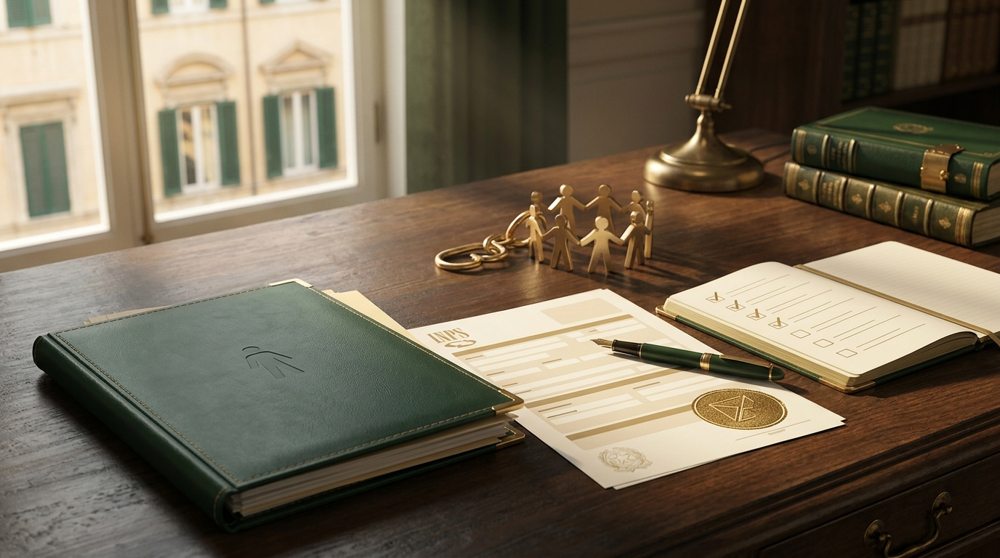

Incentivi alle assunzioni e domande INPS: cosa verificare prima di candidarsi
Tornano d'attualità gli incentivi all'occupazione gestiti tramite esonero contributivo. La fase operativa passa dalle domande telematiche all'INPS, ma l'accesso resta subordinato a requisiti precisi. Comprenderli prima di assumere è decisivo: un errore non blocca solo l'agevolazione, ma espone a revoca e recupero dei contributi a distanza di mesi.

Il fatto
Il tema degli incentivi alle assunzioni torna periodicamente al centro delle politiche del lavoro. Le misure di sostegno all'occupazione operano, nella maggior parte dei casi, attraverso un esonero contributivo: il datore di lavoro assume e, per un periodo determinato, è sgravato in tutto o in parte dei contributi previdenziali dovuti, entro un tetto massimo fissato dalla norma istitutiva.
La fase operativa di queste misure passa quasi sempre dall'INPS, che pubblica circolari e messaggi attuativi e mette a disposizione le procedure telematiche per la richiesta. Prima di programmare assunzioni contando su un beneficio, è essenziale verificare gli estremi esatti della misura applicabile: numero e data del provvedimento, importo dell'esonero, durata in mesi e finestra temporale per presentare domanda. Sono dati che vanno letti sulla fonte ufficiale e non dati per acquisiti.
Inquadramento normativo
Due precisazioni preliminari. L'esonero contributivo incide sul costo del lavoro lato datore, riducendo gli oneri previdenziali; non va confuso con una riduzione della retribuzione, che riguarda invece quanto percepito dal lavoratore. L'incentivo non taglia lo stipendio: abbatte il contributo a carico dell'azienda.
I principi generali validi per qualsiasi incentivo all'assunzione sono fissati dall'art. 31 del D.lgs. n. 150/2015. La norma esclude il beneficio quando l'assunzione viola un diritto di precedenza alla riassunzione, previsto da legge o da contratto collettivo, in favore di un altro lavoratore. Esclude inoltre l'incentivo se presso il datore o l'utilizzatore sono in atto sospensioni dal lavoro connesse a crisi o riorganizzazione, salvo che l'assunzione riguardi mansioni diverse. Rileva poi la posizione del lavoratore: l'incentivo non spetta se per quel lavoratore il datore fruisce già di altro incentivo, salvo cumulo espressamente consentito.
L'art. 31 disciplina anche gli assetti societari collegati: se l'assunzione avviene tra società tra cui esiste un legame, l'incentivo non spetta in presenza di assetti proprietari sostanzialmente coincidenti o di rapporti di controllo o collegamento. È una delle cause più frequenti di contestazione.
Resta inoltre fermo il requisito generale di regolarità contributiva (DURC) e del rispetto delle condizioni di cui all'art. 1, comma 1175, della L. n. 296/2006: assenza di violazioni nelle norme a tutela del lavoro e rispetto degli accordi e contratti collettivi.
Cumulabilità con altre misure e ordine cronologico di accesso a fondi a stanziamento limitato sono regolati di volta in volta dal provvedimento istitutivo e dalla relativa circolare INPS: vanno verificati sul testo specifico, perché non esiste una regola unica.
Implicazioni pratiche
Il punto critico è il controllo a posteriori. L'INPS riconosce l'esonero sulla base di quanto dichiarato in domanda, ma può verificarne i presupposti anche a distanza di tempo. Se emerge che un requisito mancava, la conseguenza non è solo la perdita del beneficio futuro: scatta la revoca e il recupero dei contributi già non versati, con sanzioni e interessi.
Le contestazioni più ricorrenti riguardano proprio i collegamenti societari, le sospensioni in atto e il mancato rispetto del diritto di precedenza. Sono profili che l'azienda spesso sottovaluta in fase di domanda e che emergono solo in sede di accertamento, quando l'esposizione economica si è già accumulata.
Per questo l'invio della domanda non è il momento conclusivo, ma quello in cui occorre avere già documentato la sussistenza di tutti i requisiti.
Cosa fare in concreto
- Verificare gli estremi della misura sulla circolare o sul messaggio INPS di riferimento: importo, durata, scadenze e platea ammessa, senza affidarsi a sintesi giornalistiche.
- Ricostruire la posizione del lavoratore da assumere: eventuali diritti di precedenza, incentivi già fruiti, precedenti rapporti con l'azienda o con società collegate.
- Controllare gli assetti societari in caso di gruppi o legami partecipativi, per escludere le ipotesi di esclusione previste dall'art. 31 D.lgs. 150/2015.
- Accertare la regolarità contributiva e il rispetto dell'art. 1, comma 1175, L. 296/2006 prima della presentazione della domanda.
- Conservare la documentazione a supporto dei requisiti dichiarati, in vista di possibili controlli successivi.
È opportuno trattare la richiesta di incentivo come una scelta che produce effetti pluriennali, non come un mero adempimento telematico.
Disclaimer
Contributo informativo a cura di Tamburro & Partners - Avv. Giuseppe Tamburro. Non costituisce parere legale.
Ogni storia di lavoro ha i suoi tempi.
Se gestisci HR e vuoi un confronto su contenzioso, ispezioni o licenziamenti, scrivi allo studio. Ti rispondiamo entro un giorno lavorativo.